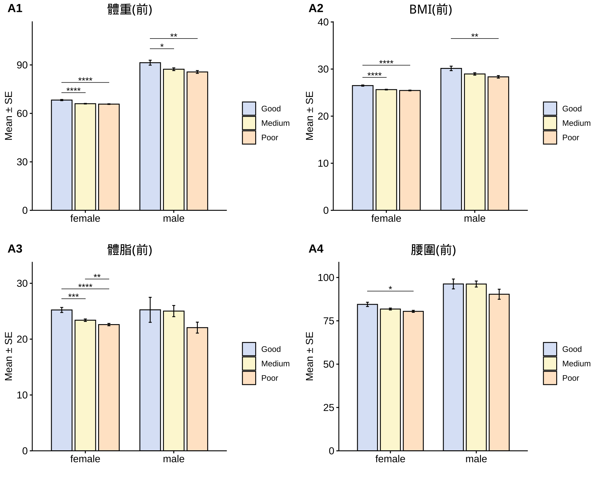
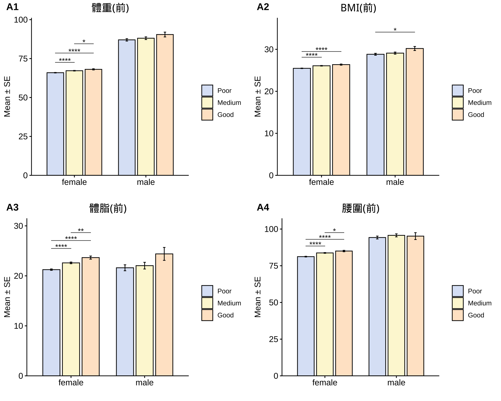
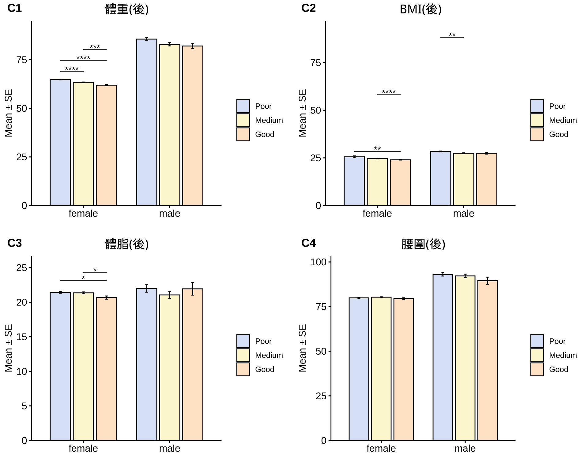
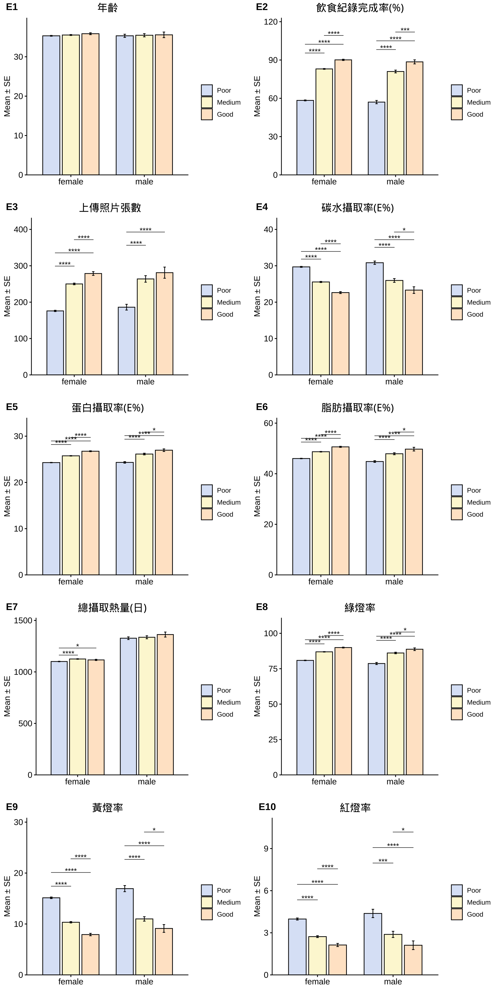
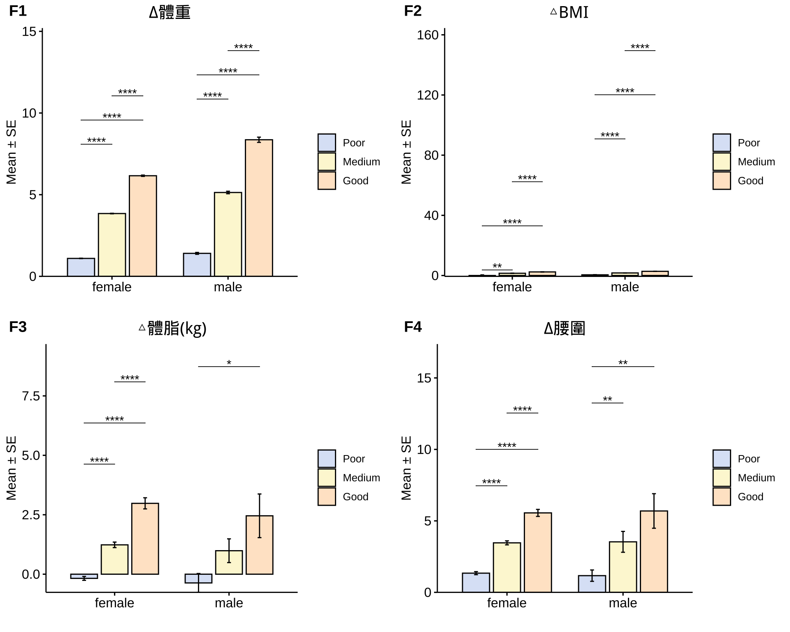

依據減重成效進行分層分析，分成三個組別：
| Good | Medium | Poor | Sum | |
|---|---|---|---|---|
| female | 977 | 3997 | 4050 | 9024 |
| male | 130 | 404 | 355 | 889 |
| Sum | 1107 | 4401 | 4405 | 9913 |
| Note: FLC Program |
在目前的減重客群中，我們的控糖減重策略成效跟「介入前狀態」 無顯著相關。


在分層分析中顯示，減重表現優異者在飲食紀錄完成度、綠燈率、三大營養素攝取比例、六大類食物攝取量等均優於減重表現低於預期者，具統計上顯著差異。



| Good (n=977) | Medium (n=3997) | Poor (n=4050) | Good (n=130) | Medium (n=404) | Poor (n=355) | 顯著差異 | |
|---|---|---|---|---|---|---|---|
| 體重(前) | 68.25 ± 0.35 | 66.01 ± 0.18 | 65.75 ± 0.19 | 91.39 ± 1.53 | 87.34 ± 0.84 | 85.65 ± 0.86 | **** |
| BMI(前) | 26.49 ± 0.12 | 25.64 ± 0.08 | 25.45 ± 0.08 | 30.14 ± 0.48 | 28.96 ± 0.25 | 28.35 ± 0.27 | **** |
| 體脂(前) | 25.23 ± 0.27 | 23.39 ± 0.13 | 22.61 ± 0.13 | 25.25 ± 1.19 | 25.03 ± 0.57 | 22.06 ± 0.58 | **** |
| 腰圍(前) | 84.49 ± 0.46 | 81.8 ± 0.2 | 80.47 ± 0.22 | 96.26 ± 1.09 | 96.23 ± 0.62 | 90.34 ± 1.01 |
|
| 體重(後) | 61.8 ± 0.32 | 63.06 ± 0.17 | 64.89 ± 0.19 | 82.61 ± 1.37 | 83.31 ± 0.8 | 84.74 ± 0.86 | **** |
| BMI(後) | 23.99 ± 0.11 | 24.5 ± 0.07 | 25.12 ± 0.08 | 27.24 ± 0.43 | 27.62 ± 0.24 | 28.04 ± 0.26 | **** |
| 體脂(後) | 20.54 ± 0.22 | 20.96 ± 0.12 | 21.54 ± 0.14 | 21.17 ± 0.76 | 20.89 ± 0.49 | 20.87 ± 0.6 | *** |
| 腰圍(後) | 79.48 ± 0.36 | 79.08 ± 0.21 | 79.51 ± 0.22 | 91.07 ± 1.43 | 89.55 ± 0.67 | 92.19 ± 0.69 | ns |
| 年齡 | 36 ± 0.23 | 35.29 ± 0.11 | 35.2 ± 0.12 | 35.78 ± 0.61 | 34.52 ± 0.39 | 34.86 ± 0.49 | ** |
| 飲食紀錄完成率(%) | 93.15 ± 0.41 | 81.41 ± 0.37 | 61.18 ± 0.49 | 90.96 ± 1.18 | 76.72 ± 1.28 | 54.46 ± 1.65 | **** |
| 上傳照片張數 | 434.38 ± 8.07 | 362.14 ± 4.92 | 231.18 ± 3.51 | 464.84 ± 37.49 | 359.23 ± 26.01 | 192.99 ± 11.58 | **** |
| 碳水攝取率(E%) | 23.64 ± 0.26 | 27.89 ± 0.15 | 31.27 ± 0.16 | 23.6 ± 0.84 | 29.3 ± 0.49 | 33.36 ± 0.52 | **** |
| 蛋白攝取率(E%) | 26.18 ± 0.09 | 24.88 ± 0.05 | 23.74 ± 0.06 | 26.4 ± 0.28 | 24.88 ± 0.18 | 23.35 ± 0.19 | **** |
| 脂肪攝取率(E%) | 50.17 ± 0.21 | 47.23 ± 0.12 | 44.99 ± 0.12 | 49.99 ± 0.68 | 45.82 ± 0.37 | 43.29 ± 0.4 | **** |
| 總攝取熱量(日) | 2141.27 ± 35.34 | 1971.7 ± 16.86 | 1703.21 ± 14.91 | 2787.23 ± 145.98 | 2583.69 ± 93.17 | 2316.17 ± 103.73 | **** |
| 綠燈率 | 88.93 ± 0.31 | 85.15 ± 0.19 | 79.56 ± 0.26 | 87.69 ± 0.92 | 82.82 ± 0.71 | 75.59 ± 0.93 | **** |
| 黃燈率 | 8.95 ± 0.26 | 11.96 ± 0.15 | 16.42 ± 0.22 | 9.84 ± 0.76 | 13.54 ± 0.54 | 19.1 ± 0.81 | **** |
| 紅燈率 | 2.12 ± 0.1 | 2.89 ± 0.07 | 4.02 ± 0.1 | 2.48 ± 0.43 | 3.63 ± 0.29 | 5.31 ± 0.43 | **** |
| ∆體重 | 6.45 ± 0.04 | 2.94 ± 0.05 | 0.86 ± 0.01 | 8.78 ± 0.19 | 4.03 ± 0.21 | 0.91 ± 0.06 | **** |
| △BMI | 2.5 ± 0.02 | 1.14 ± 0.02 | 0.33 ± 0.01 | 2.9 ± 0.06 | 1.34 ± 0.07 | 0.3 ± 0.02 | **** |
| △體脂(kg) | 4.46 ± 0.14 | 2.3 ± 0.07 | 0.69 ± 0.06 | 4.81 ± 0.65 | 4.89 ± 0.52 | 1.27 ± 0.29 | **** |
| ∆腰圍 | 5.9 ± 0.3 | 2.65 ± 0.16 | 1.11 ± 0.1 | 7.15 ± 0.1 | 5.31 ± 0.28 | 1.62 ± 0.14 | *** |
| ∆體重(%) | 9.43 ± 0.04 | 5.07 ± 0.02 | 1.3 ± 0.02 | 9.57 ± 0.1 | 4.98 ± 0.07 | 1.06 ± 0.06 | **** |
| △BMI(％) | 9.42 ± 0.04 | 4.3 ± 0.07 | 1.29 ± 0.02 | 9.59 ± 0.1 | 4.47 ± 0.24 | 1.07 ± 0.06 | **** |
| △體脂(％) | 14.44 ± 1.77 | 9.77 ± 0.23 | 4.08 ± 0.22 | 23.83 ± 1.29 | 16.8 ± 1.33 | 5.77 ± 1.16 | ** |
| ∆腰圍(%) | 4.73 ± 0.69 | 0.58 ± 0.4 | 0.44 ± 0.24 | 7.42 ± 0.12 | 5.23 ± 0.25 | 1.94 ± 0.16 | ns |
|
Significance: Comparison: Good vs. Poor in female population. |